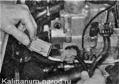
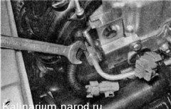
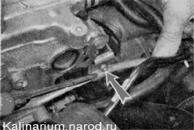
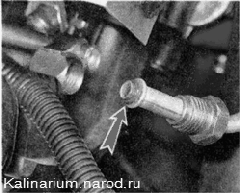
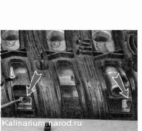
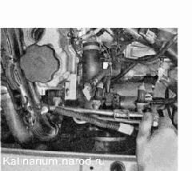

Топливная рампа снятие и установкаТопливную рампу демонтируют для снятия форсунок, а также в других случаях при ремонте двигателя. Снятие 1. Подготавливаем автомобиль к выполнению работы. 2. Сбрасываем давление топлива. После сброса давления в топливопроводе остается небольшое количество топлива. 3. Отворачиваем гайки и болты крепления впускного модуля и смещаем его максимально вперед. 4. Разъединяем колодки жгута проводов форсунок.  5. Рожковым ключом на 17 мм отворачиваем штуцер трубки топливопровода от рампы, удерживая шестигранный конец топливной рампы ключом того же размера. 
6. крестовой отверткой отворачиваем винт крепления трубки топливопровода к головке блока цилиндров. 
7. Отводим конец трубки топливопровода от топливной рампы. Снимаем с трубки топливопровода уплотнительное резиновое кольцо. Если уплотнительное кольцо трубки топливопровода повреждено, его необходимо заменить. 8. Шестигранным ключом на 5 мм отворачиваем два болта крепления топливной рампы к головке блока цилиндров. 
9. Извлекаем топливную рампу в сборе с форсунками из-под впускного модуля. Установка Устанавливаем топливную рампу в обратной последовательности. Проверьте состояние уплотнительных колец впускного модуля, поврежденные кольца замените . |